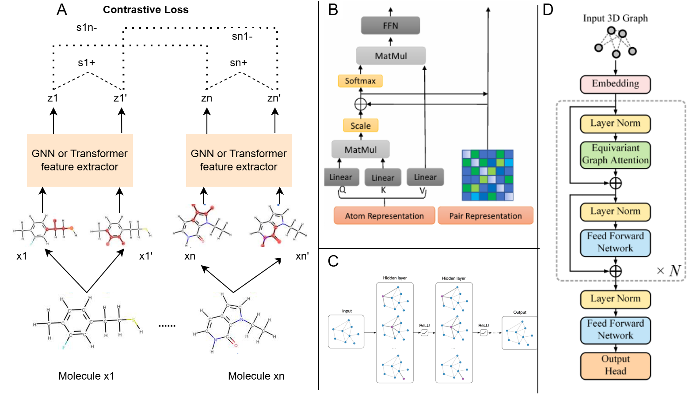
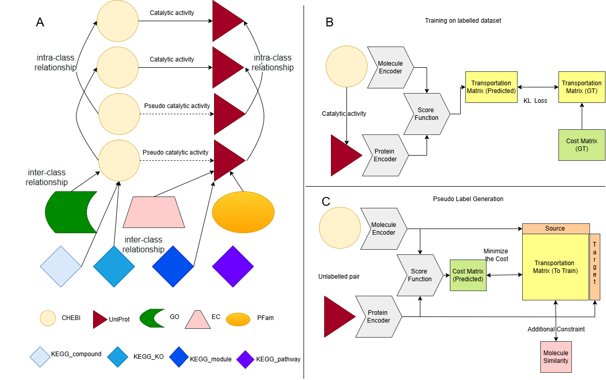

About Me
I am a Ph.D. student in Computer Science and Engineering at the University at Buffalo. My research centers on representation learning and machine learning algorithms for scientific data, with a particular emphasis on AI for Science. I explore the use of Large Language Models and representation learning for solving challenging problems in molecular and structural data analysis. I am committed to developing generalizable methods that bridge machine learning and scientific discovery, and I actively seek interdisciplinary collaborations.
Education
University at Buffalo, SUNY
Aug 2022 – Present- Ph.D. student in Computer Science and Engineering
Fudan University
Sep 2018 – Jun 2022- Bachelor of Engineering in Electrical Engineering
- Second-class Scholarship (Top 10%) in 2018 & 2022
Experience
Harvard University
Feb 2025 – May 2025- Visiting Researcher working on advanced machine learning approaches for scientific discovery.
MBZUAI
Sep 2024 – Jan 2025- Visiting Researcher focusing on cross‑disciplinary AI research in molecular modeling.
Galasports Co.
Jun 2023 – Aug 2023- Summer intern as a machine learning engineer; implemented ML solutions for sports analytics.
Selected Publications

A Probability Contrastive Learning Framework for Graph Representation Learning
An approach to alleviate false pairs in graph contrastive learning by modeling probabilistic weights that identify true positives and negatives, achieving state‑of‑the‑art results on MoleculeNet and QM9 benchmarks.
Unified Biomedical Knowledge Framework for Predicting Molecule‑Protein Interactions
We integrate multi‑modal biological knowledge graphs and use optimal transport to infer pseudo‑labels for unlabeled molecule‑protein pairs. This ongoing project aims to enable robust zero‑shot generalization on unseen interactions.

SE‑3 Equivariant State‑Space Networks for Molecular Representation
We leverage efficient state‑space models to develop an SE‑3 equivariant architecture that transforms molecular graphs into atom sequences. This ongoing work explores performance gains over transformer and GNN baselines on MoleculeNet and QM9 tasks.
Other Papers
- A Compositional Approach to Unnormalized Statistical Models – ICML 2023
- Prompt Tuning Based Adapter for Vision‑Language Model Adaptation, arXiv
- KidSpeak: A Versatile Language Model for Children's Speech Tasks, arXiv